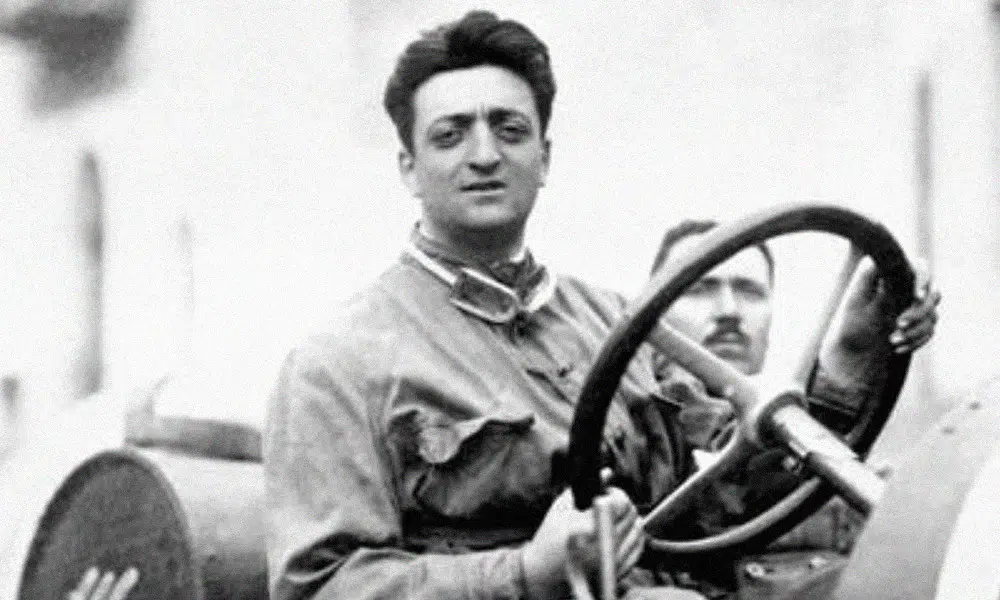
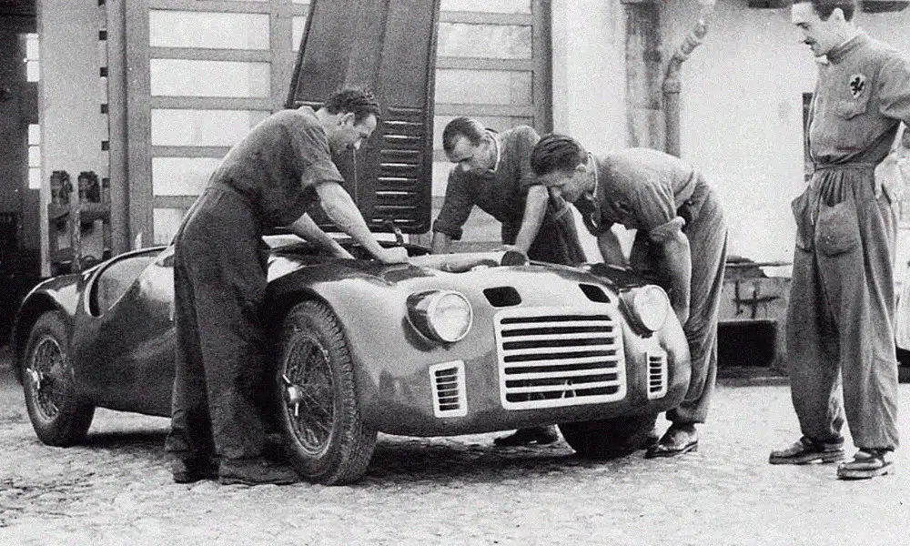

A história de Enzo Ferrari
Nascido em 18 de fevereiro de 1898, na cidade de Modena, na Itália, Enzo Anselmo Ferrari apaixonou-se pelo automobilismo logo aos dez anos de idade. Anos mais tarde, o jovem notaria a influência que a experiência no circuito de Bolonha teria em sua vida, já que o mesmo tornou-se mecânico e, posteriormente, piloto de testes.
Após oferecer seus serviços à empresas como Fiat, Enzo foi dispensado e acabou indo parar na Alfa Romeo. Onde conquistou alguns prêmios como piloto automobilístico. Porém, após o nascimento de seu filho, em 1932, Ferrari decidiu aposentar-se das pistas e dedicar-se exclusivamente ao desenvolvimento de carros de corrida.
A história da Ferrari
Scuderia Ferrari, hoje apenas Ferrari, é a marca e equipe de corrida mais antiga e bem sucedida da modernidade. Além disso, seus carros são vistos como símbolo de velocidade, luxo e riqueza. O empenho de seu fundador, Enzo Ferrari, em aliar sua experiência como piloto à engenharia aprendida quando mecânico, revolucionou para sempre a indústria automobilística.
Embora inicialmente a montadora apenas patrocinasse pilotos e carros de corrida já fabricados, não demorou para que a mesma iniciasse sua produção independente. Assim, através da Ferrari 125S, a empresa apresentou o motor V12 ao mundo, tornando-se um orgulho nacional e um dos maiores símbolos italianos.